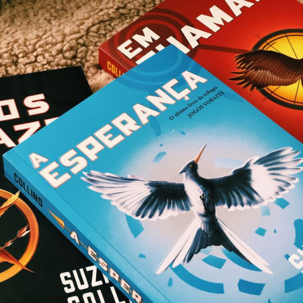

Sinopse:
Constituída por uma suntuosa Capital cercada de 12 distritos periféricos, a nação de Panem se
ergueu após a destruição dos Estados Unidos. Como represália por um levante contra a capital, a
cada ano os distritos são forçados a enviar um menino e uma menina entre 12 e 18 anos para
participar dos Jogos Vorazes. As regras são simples - os 24 tributos, como são chamados os
jovens, são levados a uma arena e devem lutar entre si até só restar um sobrevivente. Quando
Katniss Everdeen, de 16 anos, decide participar dos Jogos Vorazes para poupar a irmã mais nova,
causando grande comoção no país, ela sabe que essa pode ser a sua sentença de morte. Mas a jovem
usa toda a sua habilidade de caça e sobrevivência ao ar livre para se manter viva. Depois de
ganhar os Jogos Vorazes, 'Em Chamas' conta como Katniss terá que enfrentar a represália da
Capital e decidir que caminho tomar quando descobre que suas atitudes nos jogos incitaram
rebeliões em alguns distritos. Já em 'A Esperança', com a chegada dos rebeldes do lendário
Distrito 13, enfim é possível organizar uma resistência. A coragem de Katniss nos jogos fez
nascer a esperança em um país disposto a fazer de tudo para se livrar da opressão. E agora,
contra a própria vontade, ela precisa assumir seu lugar como símbolo da causa rebelde. Ela
precisa virar o Tordo. O sucesso da revolução dependerá de Katniss aceitar ou não essa
responsabilidade.